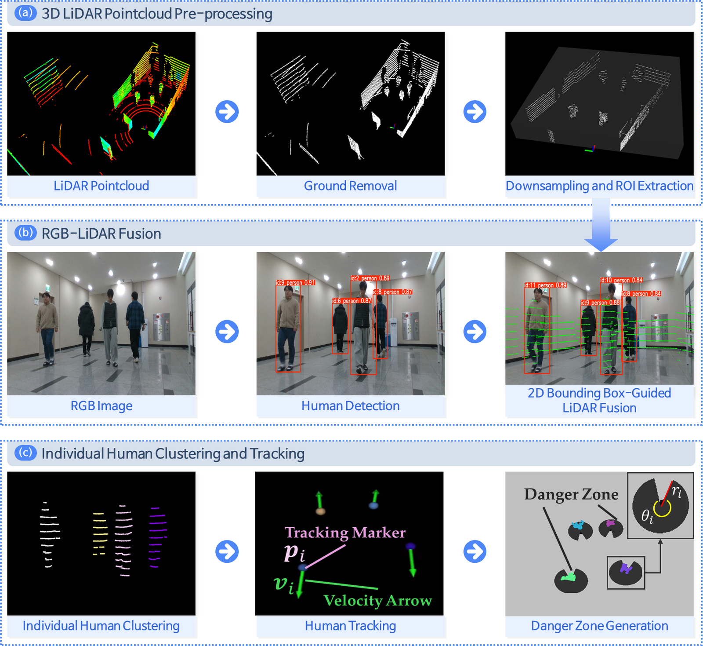
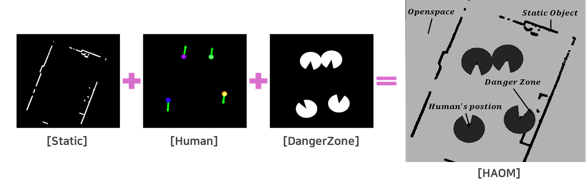
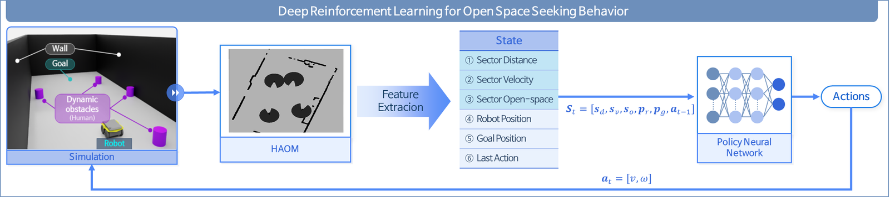
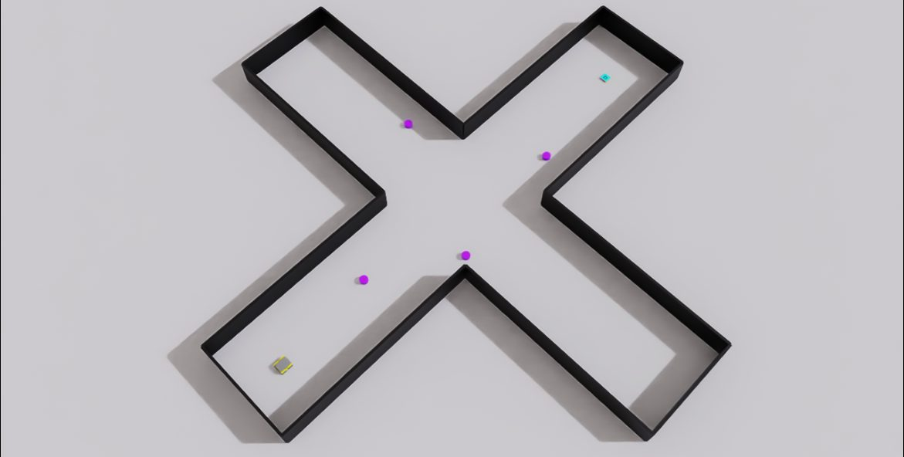
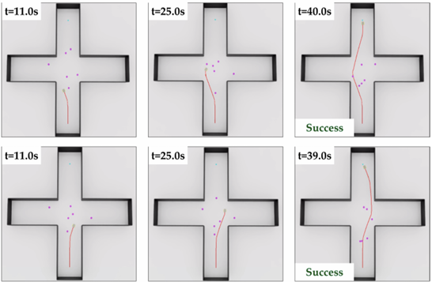

SOAR-RL: Safe and Open-Space Aware
Reinforcement Learning Navigation
- For mobile robots that must coexist with people in narrow spaces, I fused 3D LiDAR and RGB to estimate each pedestrian's position and velocity and generate dynamic danger zones.
- Built a Human-Aware Occupancy Map (HAOM) layering static obstacles, humans, and danger zones, and trained an RL policy with an open-space-aware reward.
- 94% average success rate across scenarios with 1–6 dynamic obstacles — shorter paths and travel times than existing crowd-navigation baselines.
PROBLEMWhy this is hard
In corridors and narrow passages, a robot avoiding a person can easily corner itself against a wall — or brush past the person threateningly. Classical planners treat people as mere moving obstacles and ignore where they are heading; existing crowd-navigation research assumes open spaces and degrades sharply in confined ones. This work starts from representing both "where people are going" and "where the robot can escape to" in the state.
METHOD 1Sensor-fusion human perception
The 3D LiDAR point cloud is preprocessed (ground removal, downsampling, ROI extraction), then matched with YOLOv11 person bounding boxes to cluster points per individual. Pedestrian velocity is estimated from frame-to-frame centroid motion, and a danger zone is generated dynamically for each person from position and velocity.

METHOD 2Human-Aware Occupancy Map (HAOM)
A high-resolution occupancy map (10 m × 10 m at 0.01 m/cell) around the robot fuses three layers — Static (obstacles), Human (detected people), and DangerZone — so the RL agent can distinguish "empty space" from "space a person is about to cross".

METHOD 3Open-space-aware reward and training
In NVIDIA Isaac Sim / Isaac Lab, dynamic obstacles were placed in walled environments. The state combines HAOM obstacle information with traversable distance (open space); the reward exploits the open-space direction. Straight, L-shaped, and intersection courses with 1–6 obstacles provided generalization across scenarios.


RESULTSEvaluation
(min 87%)
(timeout 0%)
fastest in comparison
classical ROS planners
| Method | SR (%) ↑ | CR (%) ↓ | TOR (%) ↓ | μPL (m) ↓ | μS (m/s) | NT (s) ↓ |
|---|---|---|---|---|---|---|
| ORCA | 31.0 | 68.0 | 1.0 | 2.91 | 0.35 | 8.41 |
| CADRL | 78.0 | 16.0 | 6.0 | 4.49 | 0.56 | 8.04 |
| LSTM-RL | 89.0 | 8.0 | 3.0 | 7.05 | 0.87 | 8.10 |
| DSRNN | 93.0 | 7.0 | 0.0 | 10.01 | 1.02 | 9.78 |
| SOAR-RL (Ours) | 94.0 | 6.0 | 0.0 | 4.21 | 0.61 | 5.28 |
SR: success rate · CR: collision rate · TOR: timeout rate · μPL: mean path length · NT: navigation time. Highest success rate with a 58% shorter path than DSRNN.

DEMOVideos
Official paper video — training and evaluation across scenarios (3:52)
 ▶YouTube
▶YouTube
Real-time human detection (3D LiDAR-RGB fusion)
 ▶YouTube
▶YouTube
Dynamic obstacle avoidance in narrow spaces
CITATIONBibTeX
@Article{s25175236,
AUTHOR = {Jun, Minkyung and Park, Piljae and Jung, Hoeryong},
TITLE = {SOAR-RL: Safe and Open-Space Aware Reinforcement Learning
for Mobile Robot Navigation in Narrow Spaces},
JOURNAL = {Sensors},
VOLUME = {25},
NUMBER = {17},
ARTICLE-NUMBER = {5236},
YEAR = {2025},
ISSN = {1424-8220},
DOI = {10.3390/s25175236}
}